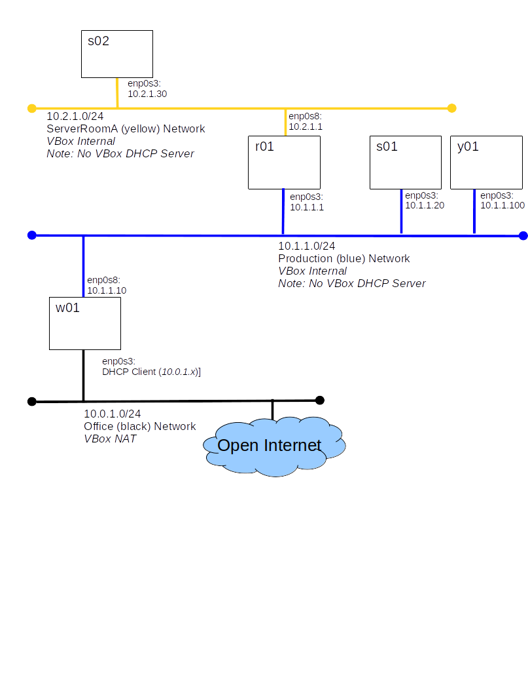

The configuration we built in the routing lab has proved useful but the owners of s01 are upset. It seems they resent their expensive server being used as a router for those lazy no good owners of s02. Your boss has commanded you to "stop using s01 as a router, but maintain the yellow and blue network separation." Fortunately, you have an extra small server with two NICs in inventory. Your task is to deploy it as a router named r01.

You will run a host info script on s02 and on w01 submitting two output files to Canvas.
Use VirturalBox cloning to create the VM's you need. Both r01 and s02 should be created by cloning s01
systemctl disable firewalld systemctl stop firewalld
Run the host info script, host_info_routing.sh on each of s02 and w01 and submit the output files to Canvas.